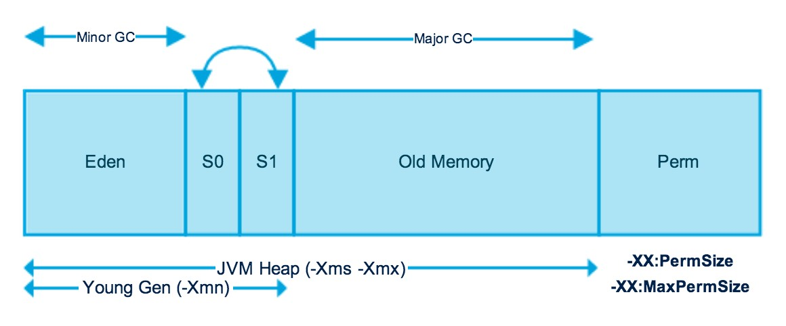

Overview
- Java Virtual Machine (JVM)
- Java Memory Models
- Heap and Non-Heap Memory
- Allocated and Used Memory
- Java Stack Memory
- Garbage Collection
- Mark and Sweep Model of Garbage collection
- Monitoring of Memory Use and GC Activity
- Java Garbage Collection Tuning
- Sources
- Related
Java (JVM) Memory Structure
JVM memory is divided into multiple parts: Heap Memory, Non-Heap Memory, and Other.
Heap memory
- Run time data area from which the memory for all java class instances
- The size of the heap can be specified using –Xms VM option.
- The heap can be of fixed size or variable size depending on the garbage collection strategy.
- Maximum heap size can be set using –Xmx option default value is 64MB
Non Heap memory
- It is created at the JVM startup and stores per-class structures such as runtime constant pool, field and method data,
and the code for methods and constructors, as well as interned Strings.
- This can be changed using –XX:MaxPermSize VM option, default value is 64MB
- JVM uses other memory to store the JVM code itself, JVM internal structures, loaded profiler agent code and data, etc.
Java (JVM) Heap Memory Structure

- The JVM heap is physically divided into two parts (or generations): nursery (or young space/young generation) and old
space (or old generation).
- The nursery is a part of the heap reserved for allocation of new objects.
- When the nursery becomes full, garbage is collected by running a special young collection, where all the objects that
have lived long enough in the nursery are promoted (moved) to the old space
- This garbage collection is called Minor GC. The nursery is divide into three parts – Eden Memory and two Survivor Memory
spaces.
cont...
- Most of the newly created objects are located in the Eden Memory space.
- Minor GC also checks the survivor objects and moves them to the other survivor space. So at a time, one of the survivor
space is always empty.
- Objects that have survived many cycles of GC, are moved to the old generation memory space. Usually it is done by setting
a threshold for the age of the nursery objects before they become eligible to promote to old generation
- Old generation garbage collection is called as Major GC and usually takes longer time.
Java Memory Models
Permanent Generation
- Perm Gen is populated by JVM at runtime based on the classes used by the application.
- Perm Gen also contains Java SE library classes and methods. Perm Gen objects are garbage collected in a full garbage
collection.
Metaspace
- With Java 8, there is no Perm Gen, that means there is no more “java.lang.OutOfMemoryError: PermGen” space problems.
- Metaspace is not part of the heap.
- metadata are now allocated out of native memory. Metaspace by default auto increases its size
- “-XX:MetaspaceSize” and “-XX:MaxMetaspaceSize”.
- Metaspace is that the lifetime of classes and their metadata matches the lifetime of the classloaders.
Object Allocation
- During object allocation, the JVM distinguishes between small and large objects.
- The limit for when an object is considered large depends on the JVM version, the heap size, the garbage collection strategy and the platform used, but is usually somewhere between 2 and 128 kB.
- Small objects are allocated in thread local areas (TLAs). The thread local areas are free chunks reserved from the heap and given to a Java thread for exclusive use.
- The thread can then allocate objects in its TLA without synchronizing with other threads. When the TLA becomes full, the thread simply requests a new TLA.
- The TLAs are reserved from the nursery
- Large objects that don’t fit inside a TLA are allocated directly on the heap. When a nursery is used, the large objects are allocated directly in old space.
Garbage Collection
The Mark and Sweep Model
- Mark and sweep garbage collection model for performing garbage collections of the whole heap.
- Initial marking
- Concurrent marking,
- Precleaning
- The parallel mark and sweep strategy (also called the parallel garbage collector) uses all available CPUs in the system for performing the garbage collection as fast as possible. All Java threads are paused during the entire parallel garbage collection.
Generational Garbage Collection
Dynamic and Static Garbage Collection Modes
- JVM uses a dynamic garbage collection mode that automatically selects a garbage collection strategy to use, aiming at optimizing the application throughput. You can also choose between two other dynamic garbage collection modes or select the garbage collection strategy statically.
- The following dynamic modes are available:
- throughput
- pausetime
- deterministic
- The major static strategies are:
- singlepar
- genpar
- singlecon
- gencon
Compaction
- Objects that are allocated next to each other will not necessarily become unreachable (“die”) at the same time. This means that the heap may become fragmented after a garbage collection, so that the free spaces in the heap are many but small, making allocation of large objects hard or even impossible.
- Free spaces that are smaller than the minimum thread local area (TLA) size can not be used at all, and the garbage collector discards them as dark matter until a future garbage collection frees enough space next to them to create a space large enough for a TLA.
- Compaction moves objects closer together and further down in the heap, thus creating larger free areas near the top of the heap.
- External and Internal Compaction:
- External compaction moves (evacuates) the objects within the compaction area to free positions outside the compaction area and as far down in the heap as possible.
- Internal compaction moves the objects within the compaction area as far down in the compaction area as possible, thus moving them closer together.
- The JVM selects a compaction method depending on the current garbage collection mode and the position of the compaction area.
- External compaction is typically used near the top of the heap, while internal compaction is used near the bottom where the density of objects is higher.
- Sliding Window Schemes:
- The position of the compaction area changes at each garbage collection, using one or two sliding windows to determine the next position. .
- Compaction Area Sizing:
- The size of the compaction area depends on the garbage collection mode used..
- In throughput mode the compaction area size is static, while all other modes, including the static mode, adjust the compaction area size depending on the compaction area position.
- The compaction time depends on the number of objects moved and the number of references to these objects.
Java Stack Memory
- Java Stack memory is used for execution of a thread.
- They contain method specific values that are short-lived and references to other objects in the heap that are getting referred from the method.
- Stack memory is always referenced in LIFO (Last-In-First-Out) order.
- Java Runtime creates stack memory to be used by main() method thread.
- local variable created and stored in the stack memory of main() method.
- Object is created in Heap memory and stack memory contains the reference for it.
- A string goes in the String Pool in the heap space and a reference is created in the foo() stack space for it.
- Heap memory is used by all the parts of the application whereas stack memory is used only by one thread of execution.
- Objects stored in the heap are globally accessible whereas stack memory can’t be accessed by other threads.
- We can use -Xss to define the stack memory size.
- Stack memory is very fast when compared to heap memory.
String Pool
- String Pool in java is a pool of Strings stored in Java Heap Memory.
- String pool helps in saving a lot of space for Java Runtime although it takes more time to create the String.
- string interning is a method of storing only one copy of each distinct string value, which must be immutable.